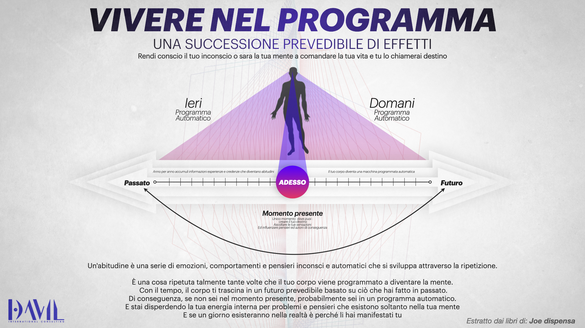
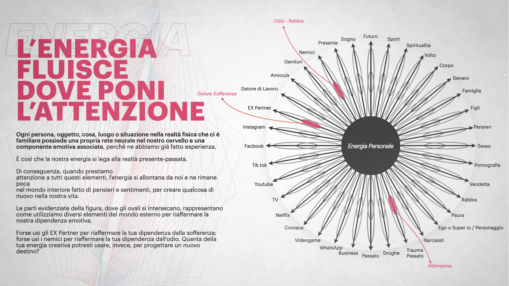
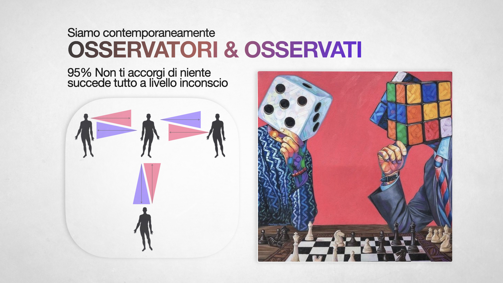
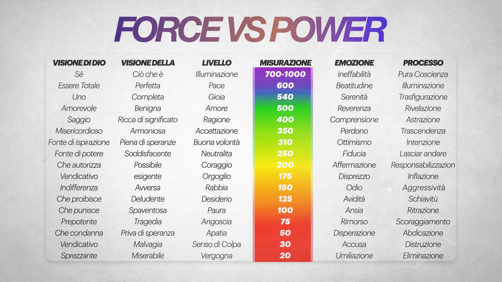
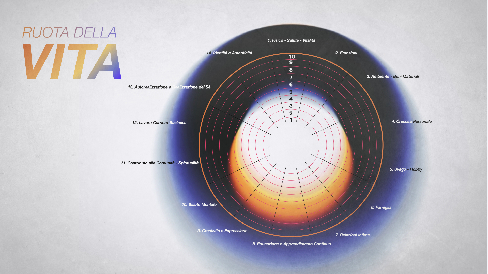
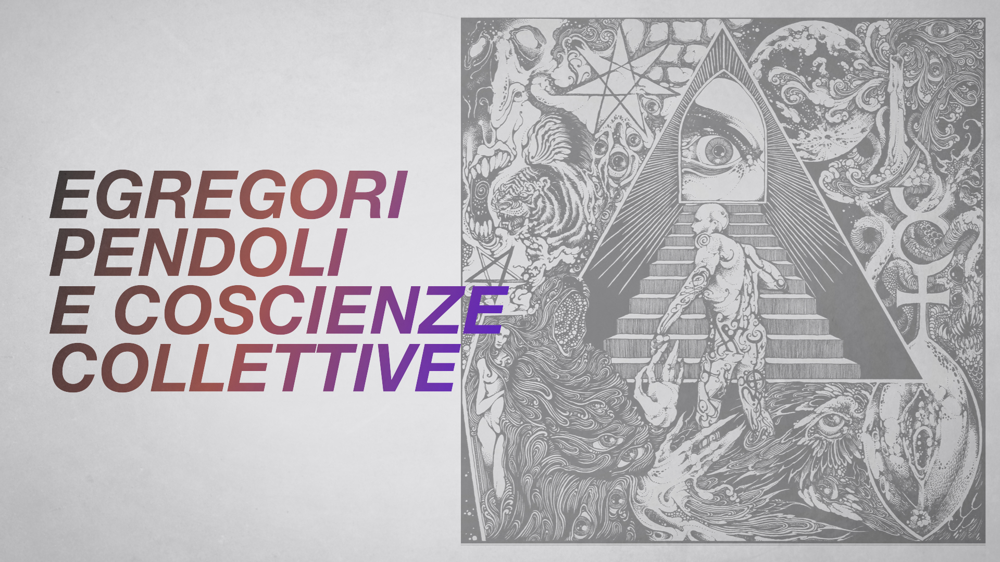
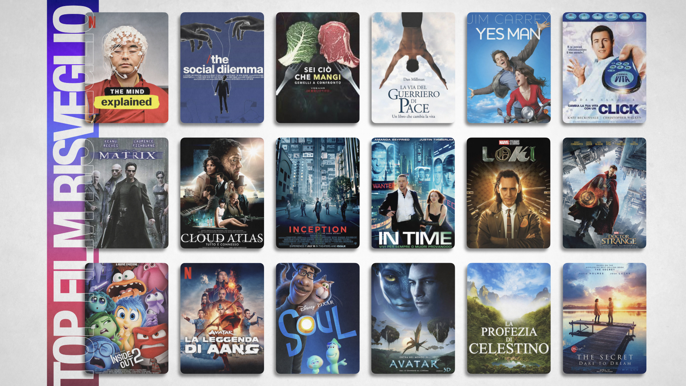

I
Ikigai — La Ragione
Scoprire l'intersezione fra ciò che ami, ciò in cui sei bravo, ciò di cui il mondo ha bisogno e ciò per cui puoi essere pagato. Il baricentro da cui costruire scelte autentiche.

· Life Leadership & Coaching ·
Mental coaching che unisce psicologia, Transurfing pratico e disciplina atletica. Per chi vuole smettere di farsi vivere dalla realtà e iniziare a sceglierla — con metodo, corpo e coscienza.
Viviamo immersi in un programma automatico fatto di abitudini, emozioni ripetute e pensieri inconsci. Il 95% di ciò che chiamiamo "destino" è in realtà il riflesso di ciò che abbiamo già vissuto.
Il coaching evolutivo che propongo è un atto di riappropriazione: riportare attenzione, energia e intenzione al momento presente — l'unico luogo dove il futuro si crea.
Scoprire l'intersezione fra ciò che ami, ciò in cui sei bravo, ciò di cui il mondo ha bisogno e ciò per cui puoi essere pagato. Il baricentro da cui costruire scelte autentiche.
Integrazione fra polarità opposte — mente e corpo, razionalità ed emozione, azione e contemplazione. L'arte alchemica di unire ciò che sembra in conflitto.
Una crescita che segue l'ordine naturale: ogni tappa contiene e amplifica la precedente. Non lineare, ma esponenziale e armonica.
Una mappa della coscienza che connette forma e spirito, materia e significato. Dieci porte per attraversare se stessi con metodo.
Se non sei nel momento presente, sei in un programma automatico. Il corpo ti trascina in un futuro prevedibile fatto di ciò che hai già vissuto. — Joe Dispenza

Ogni oggetto d'attenzione disperde energia creativa verso il mondo esterno. Riprendere l'attenzione è riprendere il potere di progettare un nuovo destino.

Siamo contemporaneamente chi guarda e ciò che viene guardato. Il 95% accade a livello inconscio. Portare luce lì è l'unica vera leva di cambiamento.

Dalla vergogna all'illuminazione: una scala di stati di coscienza che determina la qualità della tua realtà. Salire di livello è il vero lavoro di leadership. — David Hawkins

14 aree essenziali: salute, emozioni, relazioni, carriera, creatività, spiritualità. Valutare per direzionare. Un check-in radicale sul tuo equilibrio.

"La ragione per la quale ti svegli al mattino". Non deve essere grandioso: deve essere tuo. Libero da condizionamenti esterni.
Strutture energetiche collettive che si nutrono della tua attenzione. Riconoscerle è il primo passo per non esserne più agita. — Transurfing

La matrice industriale, digitale e mediatica che ci modella quotidianamente. Vederla chiaramente è il prerequisito per ogni vera autonomia.
Da Matrix a Cloud Atlas, da Inside Out a La Profezia di Celestino. Il cinema come specchio delle domande essenziali.

Il pensiero della sintesi: unire i paradigmi — Jung, Assagioli, neuroscienze, tradizioni esoteriche — in una pratica vivibile e operativa.
↳ Immagini da collocare negli spazi predisposti — basta caricare i PNG in assets/content/
La cornice di Vadim Zeland — Transurfing — è uno dei pilastri del mio metodo. Non una filosofia da contemplare: una pratica per smettere di farsi vivere dalla realtà e iniziare a selezionarla. Di seguito i concetti operativi che useremo insieme.
Ogni possibile scenario della tua vita è già esistente, latente, come una traccia incisa in un vinile. Non si "crea" il futuro: lo si sceglie, sintonizzandosi sulla linea di vita che lo contiene. La tua frequenza determina quale traccia suoni.
Strutture energetiche informazionali che si alimentano dell'energia emotiva delle persone. Paura, rabbia, indignazione, persino l'entusiasmo fanatico: il pendolo non distingue, vuole solo oscillare. La libertà inizia quando smetti di dare il tuo tempo e la tua attenzione ai pendoli distruttivi.
Quando dai troppo peso a te stesso o a un obiettivo, si genera energia di equilibrio che lavora contro di te. Il Transurfing insegna a ridurre l'importanza — non l'impegno — per permettere agli eventi di allinearsi naturalmente.
Non è la volontà ("voglio che accada"), ma l'unità di intenzione e accettazione: sapere che accadrà, senza aggrapparsi. È la forza che sposta le varianti. Richiede una mente silenziosa e un cuore fermo.
Uno "slide" è un'immagine mentale che ripeti ogni giorno — ciò che già vivi nella mente diventa la corrente principale del tuo vissuto. Scegliere gli slide giusti è la pratica base per cambiare linea di vita.
Nel Transurfing 5.0, Zeland descrive la matrice tecnologico-industriale che sottrae energia vitale: cibo sintetico, dopamina digitale, media continui, consumo compulsivo. Scardinarla comincia con gesti quotidiani di disintossicazione consapevole.
"Cammini dal vivo in un film": la realtà come proiezione. L'attenzione lucida è la pellicola, l'intenzione è il proiettore. Riprenderne il controllo è uscire dalla modalità di protagonista-vittima del copione.
L'opposto dello sforzo: una navigazione elegante dove cooperiamo con la corrente delle varianti invece di combatterla. È l'atto finale del metodo: leggerezza operativa, non rinuncia.
"Non inseguire il sogno. Scivola verso la linea di vita dove il sogno già ti sta aspettando."
— dai libri di Vadim Zeland
Uno strumento al servizio del viaggio interiore. Racconta un sogno: l'interprete AI risponde ispirandosi al framework analitico junghiano — archetipi, ombra, animus/anima, Grande Madre, alchimia come processo di individuazione, amplificazione e compensazione. Nessun dato viene inviato ai nostri server: la tua API key resta nel tuo browser e la richiesta parte direttamente verso il provider che hai scelto.
La chiave non esce dal tuo dispositivo. Per Anthropic genera una chiave su console.anthropic.com, per OpenAI su platform.openai.com.
L'interpretazione AI è uno spunto di riflessione, non una diagnosi né una terapia. Per un lavoro profondo sui sogni, considera un percorso con un analista o un coaching dedicato.
Un percorso individuale a ciclo trimestrale. Sessioni settimanali per riallineare visione, energia e azione. Per imprenditori, manager e professionisti in transizione.
Laboratori esperienziali dove il cambiamento è moltiplicato dal campo del gruppo. Teoria, pratica meditativa e strumenti di integrazione quotidiana.
Dedicato a chi costruisce un business di network o di consulenza: posizionamento, disciplina, gestione dell'energia, strategia di lungo termine. Porto nel coaching la stessa struttura che mi ha permesso di superare i 500.000 € nel network.
Un primo incontro gratuito di 30 minuti per capire se c'è terreno comune. Nessuna vendita: solo onestà e chiarezza.
Roma. Studio psicologia per mestiere, vivo il Transurfing come pratica quotidiana, mi alleno in corsa, nuoto e ciclismo perché il corpo è il primo ambiente di coscienza che abitiamo. Penso che la leadership sia prima di tutto disciplina interiore.
Nel network marketing ho costruito in prima persona un percorso da oltre 500.000 € di guadagni, e ho reinvestito 55.000 € in percorsi di alto livello con Gianluca Liguori — perché ciò che non si fa pagare ai maestri, lo si paga sempre due volte ai propri errori. Non racconto queste cifre per raccontarmi, ma per avere diritto a parlare di strategia applicata. La teoria senza risultati è letteratura; la pratica senza cornice è rumore.
Nel 2022 ho attraversato un evento segnante di frammentazione e il PTSD che ne è seguito. Ne sono uscito con un lavoro profondo di psicoanalisi e coaching, imparando a riconoscere e disinnescare le psicotrappole — quelle junghiane, i bias sfocati di Kosko, e le trappole paradossali descritte da Giorgio Nardone nella terapia breve strategica. Quel passaggio è stato il mio vero risveglio: non un'illuminazione romantica, ma il ricostruirsi pezzo per pezzo, con metodo.
Oggi integro Dispenza, Hawkins, Jung, Zeland, Grof, Monroe, Nardone, la numerologia pitagorica e le neuroscienze in un unico metodo vivibile. Accompagno imprenditori, networker e professionisti a ricostruire la relazione con se stessi — corpo, mente, energia e direzione — con la disciplina di chi è passato dal baratro e sa quanto conta ogni singolo passo.
— Davil
"Davil mi ha aiutato a vedere quello che continuavo a non voler vedere. In sei mesi ho rimesso in ordine testa, corpo e business. Il suo sguardo è diretto ma mai giudicante."
"La cosa che mi ha sorpreso è l'onestà. Nessuna promessa magica: metodo, disciplina, accompagnamento vero. Ho chiuso il mio primo anno in positivo dopo tre anni di affanni."
"Il percorso sui sogni mi ha aperto un mondo. Finalmente qualcuno che usa Jung senza svilirlo, e senza renderlo un gioco new age."
Tutte le recensioni verificate sono su Trustpilot. Fai la tua valutazione con calma — nessuna pressione.
↳ Testi di esempio — da sostituire con citazioni reali estratte da Trustpilot.
Nel podcast qui sotto, a partire dal minuto segnato, racconto il mio percorso — dal risveglio del 2022 al lavoro che faccio oggi. Senza filtri, in prima persona.
Apri la puntata su YouTube dal minuto esatto ↗Il mental coaching lavora sul presente e sul futuro — obiettivi, comportamenti, identità desiderata — partendo dal presupposto che la persona sia sana e voglia evolvere. La psicoterapia cura patologie ed elabora traumi. Io faccio coaching, non terapia: se emergono segnali che richiedono un lavoro terapeutico, lo dico chiaramente e indirizzo la persona verso professionisti qualificati.
Il blocco minimo è di 12 settimane, con sessioni settimanali. È il tempo minimo perché cambi qualcosa nei circuiti neurali e nelle abitudini. Molti clienti proseguono con cicli successivi per approfondire aree diverse.
Il Transurfing è il modello della realtà proposto da Vadim Zeland: pendoli, spazio delle varianti, intenzione esterna, slide. Lo uso perché è un manuale operativo — non una filosofia — per smettere di farsi prosciugare l'energia da strutture collettive (pendoli) e iniziare a selezionare la linea di vita in cui vuoi abitare. Nel coaching diventa pratica quotidiana, non teoria.
È uno strumento di esplorazione, non di diagnosi. Lavora con un framework junghiano robusto (archetipi, ombra, amplificazione, compensazione) e ti offre chiavi di lettura, non verdetti. La tua API key resta nel tuo browser: nessun dato transita dai miei server. Per un lavoro profondo sui sogni serve sempre un rapporto umano — il mio, o quello di un analista qualificato.
Sì — è uno dei miei ambiti principali. Ho costruito in prima persona un percorso da oltre 500.000 € nel network marketing e ho reinvestito 55.000 € in formazione di alto livello con Gianluca Liguori. Porto nel coaching la stessa struttura: posizionamento, disciplina, gestione dell'energia, visione di lungo termine. Non insegno "tecniche di vendita", costruisco il tuo sistema operativo interiore.
Sono basato a Roma ma il 70% dei percorsi 1:1 avviene online. Per il lavoro di gruppo e i laboratori esperienziali privilegio la presenza. Per aziende e team mi sposto in tutta Italia.
Prenota una sessione di esplorazione gratuita di 30 minuti via WhatsApp (+39 352 057 2683). Parliamo di dove sei, dove vuoi andare, se c'è terreno comune per lavorare insieme. Nessuna vendita, nessuna pressione.
Roma, Italia · Disponibile online e in presenza